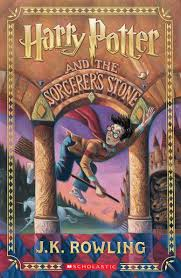

Фэнтези
философская повесть-притча Антуана де Сент-Экзюпери. По сюжету летчик, совершивший вынужденную посадку в пустыне, встречает мальчика сдалекой планеты. Путешествуя по мирам, герой познает мир, учится дружбе, любви и ответственности за тех, кого приручил
Гордость женщины, практически нищей и совершенно свободной — в своей бедности, в своей иронии, в силе своего характера... Есть ли нечто равное такой гордости?.. Предубеждение женщины, почти не способной уже, по привычке отвечать ударом на удар, поверить в искренность мужского чувства и перестать об этом думать. Это — «Гордость и предубеждение» Джейн Остин. Книга, без которой сейчас не существовало бы, наверное, ни «психологического» романа, ни «феминистской» литературы, ни — попросту — «элитной» прозы как таковой!
Художественная литература
семейная сага, повествующая о судьбах четырех сестер Марч – добросердечной красавицы Мег, "сорванца в юбке" Джо, кроткой и нежной Бесс и талантливой фантазерки Эми. Гражданская война идет далеко на Юге, но ее грозные отголоски достигли и дружной семьи небогатого провинциального пастора Марча – сам он ушел на фронт полковым священником, и жена с дочерьми, как и множество других американок, день за днем живут в страхе трагических известий. Однако никакая война не в силах помешать девочкам взрослеть и превращаться в юных девушек. Девушек с их обычными и трогательными девичьими мечтами и надеждами, радостями, горестями и, конечно, первой любовью…
культовая антиутопия Джорджа Оруэлла, предупреждающая об опасности тоталитаризма. Сюжет разворачивается в мире, поделенном между тремя враждующими сверхдержавами. В центре истории Уинстон Смит — мелкий партийный чиновник в тоталитарной Океании, который тайно решается на бунт против вездесущего Большого Брата и системы.

Фантастика
Сирота Гарри Поттер в 11 лет узнаёт, что он — знаменитый волшебник. Он отправляется в школу чародейства и волшебства «Хогвартс», где обретает друзей. Вместе с Роном и Гермионой Гарри раскрывает тайну Философского камня и предотвращает возвращение злого лорда Волан-де-Морта, виновного в гибели его родителей.
Это вторая книга о приключениях Гарри Поттера. Он снова вступает в отчаянную схватку со злом. На этот раз враг его так силен, что надежды на победу почти нет. В Школе чародейства и волшебства «Хогвартс» происходят тревожные события. Кто-то нападает на учеников школы, и преподаватели подозревают, что это таинственное чудовище, которое скрывается в легендарной Тайной комнате. Гарри Поттер и его друзья разгадывают загадку Тайной комнаты, и теперь Гарри снова предстоит сразиться с лордом Волан-де-Мортом. Сумеет ли он победить на этот раз?...
это завораживающий мистический роман, где сатира на советский быт 1930-х годов переплетается с библейской притчей и трагической историей любви. Произведение исследует вечные темы борьбы добра со зла, прощения, смерти, бессмертия и истинного творчества.
бессмертная трагедия Уильяма Шекспира о любви юноши и девушки из двух враждующих веронских родов. Их искреннее чувство становится преградой для давней семейной вендетты, приводя к трагической развязке, которая в итоге примиряет противоборствующие семьи
Молодой моряк Эдмон Дантес считал себя счастливчиком — прибыльное дело, красавица-невеста. Но власть во Франции меняется так же часто, как ветер. Донос завистника — и невинный Эдмон оказывается за решёткой на долгих четырнадцать лет... Пройдя через каменные мешки замка Иф, закалив волю, разбогатев на пиратских кладах, герой под псевдонимом «Граф Монте-Кристо» возвращается во Францию, чтобы отомстить предателям, сломавшем ему жизнь. Не убить их — он не настолько милосерден. Граф использует интриги, подкуп, влияние и провокации, чтобы сломать жизнь им самим...
Художественная литература/Детектив
социально-философский роман Ф. М. Достоевского, исследующий муки совести и искупление. Бедный студент Родион Раскольников убивает старуху-процентщицу, чтобы проверить свою теорию о «право имеющих» людях. Это преступление приводит его к тяжелейшим душевным терзаниям, полному одиночеству и, наконец, к духовному возрождению через раскаяние и веру.


.jpg)


.jpg)
.jpg)